Sampling and Bandits
n-armed bandits, the simplest RL setting
1 - n-armed bandits
n-armed bandits
The n-armed bandit (or multi-armed bandit) is the simplest form of learning by trial and error.
Learning and action selection take place in the same single state.
The \(n\) actions have different reward distributions: the reward varies around a mean value but is not always the same.
The goal is to find out through trial and error which action provides the most reward on average.
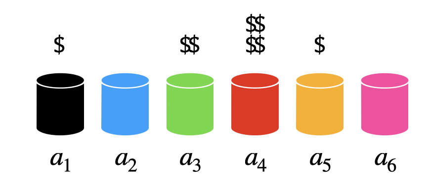
n-armed bandits

We have the choice between \(N\) different actions \((a_1, ..., a_N)\).
Each action \(a\) taken at time \(t\) provides a reward \(r_t\) drawn from the action-specific probability distribution \(r(a)\).
The mathematical expectation of that distribution is the expected reward, called the true value of the action \(Q^*(a)\).
\[ Q^*(a) = \mathbb{E} [r(a)] \]
- The reward distribution also has a variance: we usually ignore it in RL, as all we care about is the optimal action \(a^*\) (but see distributional RL later).
\[a^* = \text{argmax}_a \, Q^*(a)\]
- If we take the optimal action an infinity of times, we maximize the reward intake on average.
n-armed bandits
- The question is how to find out the optimal action through trial and error, i.e. without knowing the exact reward distribution \(r(a)\).

- We only have access to samples of \(r(a)\) by taking the action \(a\) at time \(t\) (a trial, play or step).
\[r_t \sim r(a)\]
The received rewards \(r_t\) vary around the true value over time.
We need to build estimates \(Q_t(a)\) of the value of each action based on the samples.
These estimates will be very wrong at the beginning, but should get better over time.
2 - Random sampling
Mathematical expectation
An important metric for a random variable is its mathematical expectation or expected value.
For discrete distributions, it is the “mean” realization / outcome weighted by the corresponding probabilities:
\[ \mathbb{E}[X] = \sum_{i=1}^n P(X = x_i) \, x_i \]
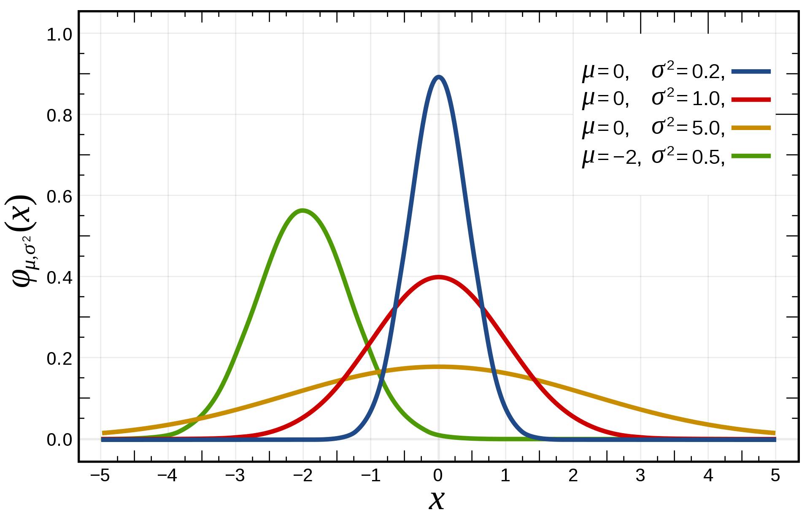
- For continuous distributions, one needs to integrate the probability density function (pdf) instead of the probabilities:
\[ \mathbb{E}[X] = \int_{x \in \mathcal{D}_X} f(x) \, x \, dx \]
- One can also compute the expectation of a function of a random variable:
\[ \mathbb{E}[g(X)] = \int_{x \in \mathcal{D}_X} f(x) \, g(x) \, dx \]
Random sampling / Monte Carlo sampling
- In ML and RL, we deal with random variables whose exact probability distribution is unknown, but we are interested in their expectation or variance anyway.

Random sampling or Monte Carlo sampling (MC) consists of taking \(N\) samples \(x_i\) out of the distribution \(X\) (discrete or continuous) and computing the sample average: \[ \mathbb{E}[X] = \mathbb{E}_{x \sim X} [x] \approx \frac{1}{N} \, \sum_{i=1}^N x_i \]
More samples will be obtained where \(f(x)\) is high (\(x\) is probable), so the average of the sampled data will be close to the expected value of the distribution.
Random sampling / Monte Carlo sampling
Law of big numbers
As the number of identically distributed, randomly generated variables increases, their sample mean (average) approaches their theoretical mean.
MC estimates are only correct when:
the samples are i.i.d (independent and identically distributed):
independent: the samples must be unrelated with each other.
identically distributed: the samples must come from the same distribution \(X\).
the number of samples is large enough.
Monte Carlo sampling
- One can estimate any function of the random variable with random sampling:
\[ \mathbb{E}[f(X)] = \mathbb{E}_{x \sim X} [f(x)] \approx \frac{1}{N} \, \sum_{i=1}^N f(x_i) \]
- Example of Monte Carlo sampling to estimate \(\pi/4\):
Sample a 2D point \(\mathbf{x}_i\) inside the unit square using the uniform distribution \(\mathcal{U}(0,1)\).
The point is inside the circle (\(||\mathbf{x}_i|| \leq 1\)) with a probability \(\dfrac{\pi}{4}\).
Update the estimation of \(\pi\):
\[ \pi \approx 4 \, \dfrac{\text{number of red points}}{\text{total number of points}} \]
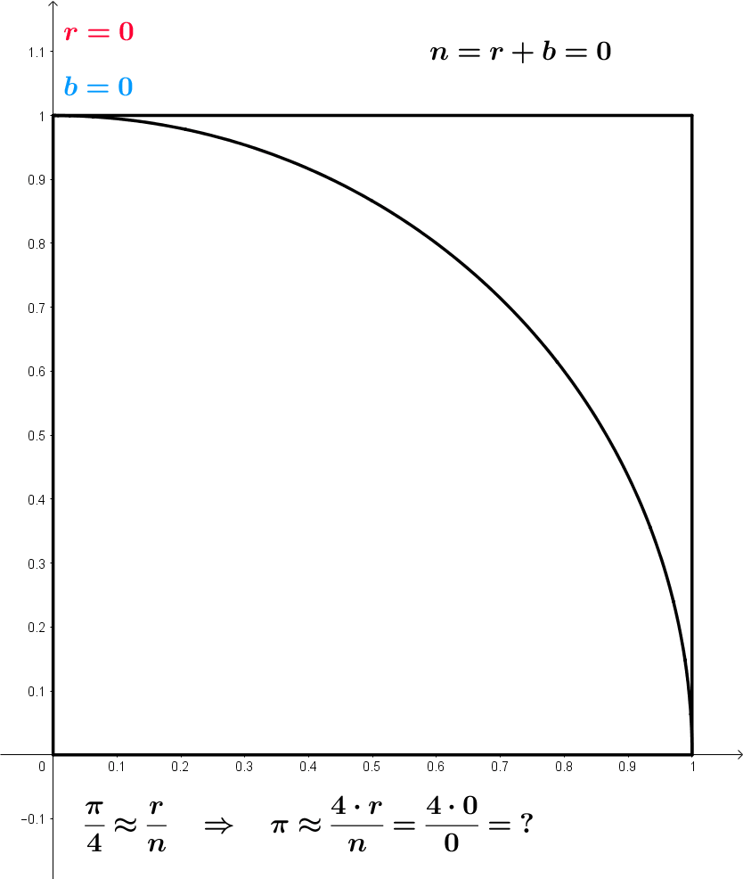
Central limit theorem
Suppose we have an unknown distribution \(X\) with expected value \(\mu = \mathbb{E}[X]\) and variance \(\sigma^2\).
We can take randomly \(N\) samples from \(X\) to compute the sample average:
\[ S_N = \frac{1}{N} \, \sum_{i=1}^N x_i \]
- The Central Limit Theorem (CLT) states that:
The distribution of sample averages is normally distributed with mean \(\mu\) and variance \(\frac{\sigma^2}{N}\).
\[S_N \sim \mathcal{N}(\mu, \frac{\sigma}{\sqrt{N}})\]
Central limit theorem
If we perform the sampling multiple times, even with few samples, the average of the sampling averages will be very close to the expected value.
The more samples we get, the smaller the variance of the estimates.
Although the distribution \(X\) can be anything, the sampling averages are normally distributed.

Estimators
- CLT shows that the sampling average is an unbiased estimator of the expected value of a distribution:
\[\mathbb{E}(S_N) = \mathbb{E}(X)\]
An estimator is a random variable used to measure parameters of a distribution (e.g. its expectation). The problem is that estimators can generally be biased.
Take the example of a thermometer \(M\) measuring the temperature \(T\). \(T\) is a random variable (normally distributed with \(\mu=20\) and \(\sigma=10\)) and the measurements \(M\) relate to the temperature with the relation:
\[ M = 0.95 \, T + 0.65 \]

Estimators
The thermometer is not perfect, but do random measurements allow us to estimate the expected value of the temperature?
We could repeatedly take 100 random samples of the thermometer and see how the distribution of sample averages look like:

- But, as the expectation is linear, we actually have:
\[ \mathbb{E}[M] = \mathbb{E}[0.95 \, T + 0.65] = 0.95 \, \mathbb{E}[T] + 0.65 = 19.65 \neq \mathbb{E}[T] \]
- The thermometer is a biased estimator of the temperature.
Estimators
Let’s note \(\theta\) a parameter of a probability distribution \(X\) that we want to estimate (it does not have to be its mean).
An estimator \(\hat{\theta}\) is a random variable mapping the sample space of \(X\) to a set of sample estimates.
The bias of an estimator is the mean error made by the estimator:
\[ \mathcal{B}(\hat{\theta}) = \mathbb{E}[\hat{\theta} - \theta] = \mathbb{E}[\hat{\theta}] - \theta \]
- The variance of an estimator is the deviation of the samples around the expected value:
\[ \text{Var}(\hat{\theta}) = \mathbb{E}[(\hat{\theta} - \mathbb{E}[\hat{\theta}] )^2] \]
Ideally, we would like estimators with:
low bias: the estimations are correct on average (= equal to the true parameter).
low variance: we do not need many estimates to get a correct estimate (CLT: \(\frac{\sigma}{\sqrt{N}}\))
Estimators: bias and variance

Unfortunately, the perfect estimator does not exist.
Estimators will have a bias and a variance:
Bias: the estimated values will be wrong, and the policy not optimal.
Variance: we will need a lot of samples (trial and error) to have correct estimates.
One usually talks of a bias/variance trade-off: if you have a small bias, you will have a high variance, or vice versa.
In machine learning, bias corresponds to underfitting, variance to overfitting.
3 - Sampling-based evaluation
Sampling-based evaluation

- The expectation of the reward distribution can be approximated by the mean of its samples:
\[ \mathbb{E} [r(a)] \approx \frac{1}{N} \sum_{t=1}^N r_t |_{a_t = a} \]
- Suppose that the action \(a\) had been selected \(t\) times, producing rewards
\[ (r_1, r_2, ..., r_t) \]
- The estimated value of action \(a\) at play \(t\) is then:
\[ Q_t (a) = \frac{r_1 + r_2 + ... + r_t }{t} \]
- Over time, the estimated action-value converges to the true action-value:
\[ \lim_{t \to \infty} Q_t (a) = Q^* (a) \]
Online evaluation
- The drawback of maintaining the mean of the received rewards is that it consumes a lot of memory:
\[ Q_t (a) = \frac{r_1 + r_2 + ... + r_t }{t} = \frac{1}{t} \, \sum_{i=1}^{t} r_i \]
- It is possible to update an estimate of the mean in an online or incremental manner:
\[ \begin{aligned} Q_{t+1}(a) &= \frac{1}{t+1} \, \sum_{i=1}^{t+1} r_i = \frac{1}{t+1} \, (r_{t+1} + \sum_{i=1}^{t} r_i )\\ &= \frac{1}{t+1} \, (r_{t+1} + t \, Q_{t}(a) ) \\ &= \frac{1}{t+1} \, (r_{t+1} + (t + 1) \, Q_{t}(a) - Q_t(a)) \end{aligned} \]
- The estimate at time \(t+1\) depends on the previous estimate at time \(t\) and the last reward \(r_{t+1}\):
\[ Q_{t+1}(a) = Q_t(a) + \frac{1}{t+1} \, (r_{t+1} - Q_t(a)) \]
Online evaluation
The problem with the exact mean is that it is only exact when the reward distribution is stationary, i.e. when the probability distribution does not change over time.
If the reward distribution is non-stationary, the \(\frac{1}{t+1}\) term will become very small and prevent rapid updates of the mean.

Online evaluation
- The solution is to replace \(\frac{1}{t+1}\) with a fixed parameter called the learning rate (or step size) \(\alpha\):
\[ Q_{t+1}(a) = Q_t(a) + \alpha \, (r_{t+1} - Q_t(a)) \]
- Equivalent formulation:
\[ Q_{t+1}(a) = (1 - \alpha) \, Q_t(a) + \alpha \, r_{t+1} \]

- The computed value is called an exponentially moving average (or sliding average), as if one used only a small window of the past history.
Online evaluation
- Moving average:
\[ Q_{t+1}(a) = Q_t(a) + \alpha \, (r_{t+1} - Q_t(a)) \]
or:
\[ \Delta Q(a) = \alpha \, (r_{t+1} - Q_t(a)) \]
The moving average adapts very fast to changes in the reward distribution and should be used in non-stationary problems.
It is however not exact and sensible to noise.
Choosing the right value for \(\alpha\) can be difficult.
- The form of this update rule is very important to remember:
\[ \text{new estimate} = \text{current estimate} + \alpha \, (\text{target} - \text{current estimate}) \]
Estimates following this update rule track the mean of their sampled target values.
\(\text{target} - \text{current estimate}\) is the prediction error between the target and the estimate.
3 - Action selection
Action selection
Let’s suppose we have formed reasonable estimates of the Q-values \(Q_t(a)\) at time \(t\).
Which action should we do next?
If we select the next action \(a_{t+1}\) randomly (random agent), we do not maximize the rewards we receive, but we can continue learning the Q-values.
Choosing the action to perform next is called action selection and several schemes are possible.
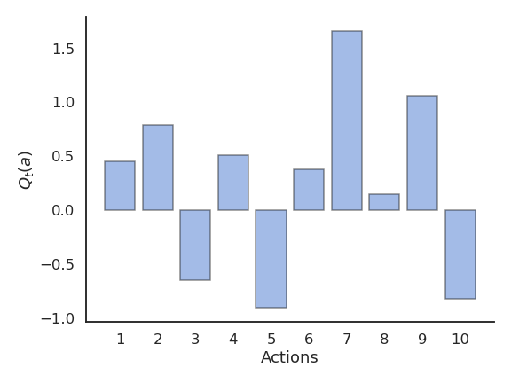
Greedy action selection
- The greedy action is the action whose estimated value is maximal at time \(t\) based on our current estimates:
\[ a^*_t = \text{argmax}_{a} Q_t(a) \]
If our estimates \(Q_t\) are correct (i.e. close from \(Q^*\)), the greedy action is the optimal action and we maximize the rewards on average.
If our estimates are wrong, the agent will perform sub-optimally.

Greedy action selection
- This defines the greedy policy, where the probability of taking the greedy action is 1 and the probability of selecting another action is 0:
\[ \pi(a) = \begin{cases} 1 \; \text{if} \; a = a_t^* \\ 0 \; \text{otherwise.} \\ \end{cases} \]
- The greedy policy is deterministic: the action taken is always the same for a fixed \(Q_t\).
Problem with greedy action selection
- Greedy action selection only works when the estimates are good enough.
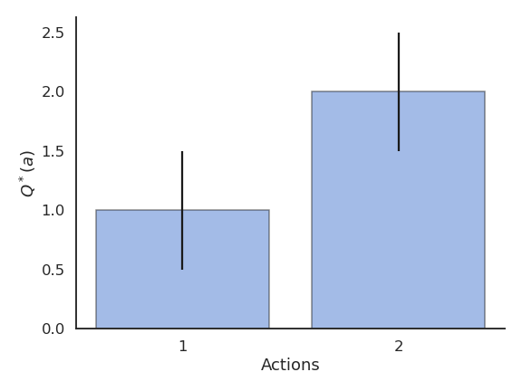
Problem with greedy action selection
- Estimates are initially bad (e.g. 0 here), so an action is sampled randomly and a reward is received.
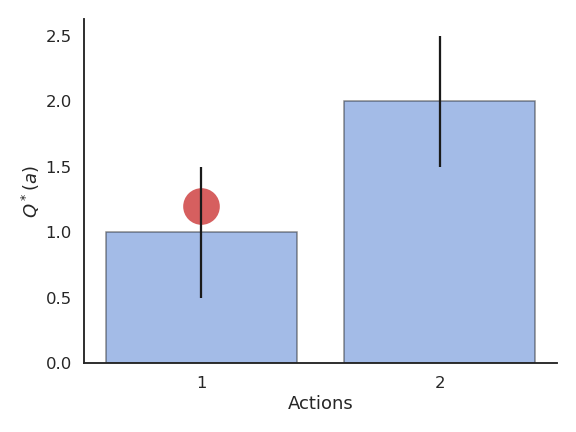
Problem with greedy action selection
- The Q-value of that action becomes positive, so it becomes the greedy action.
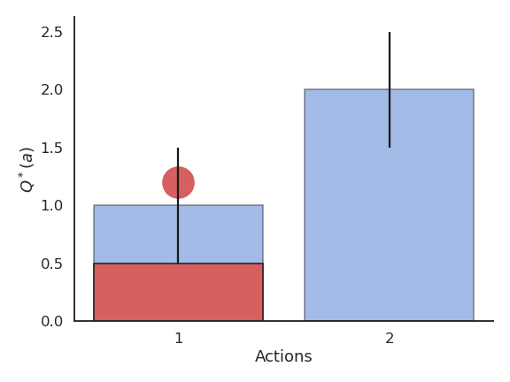
Problem with greedy action selection
- Greedy action selection will always select that action, although the second one would have been better.
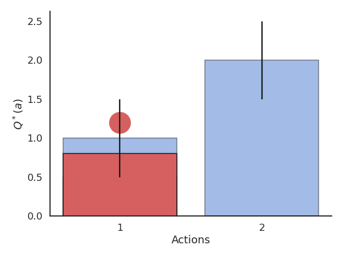
Exploration-exploitation dilemma
This exploration-exploitation dilemma is the hardest problem in RL:
Exploitation is using the current estimates to select an action: they might be wrong!
Exploration is selecting non-greedy actions in order to improve their estimates: they might not be optimal!
One has to balance exploration and exploitation over the course of learning:
More exploration at the beginning of learning, as the estimates are initially wrong.
More exploitation at the end of learning, as the estimates get better.

\(\epsilon\)-greedy action selection
\(\epsilon\)-greedy action selection ensures a trade-off between exploitation and exploration.
The greedy action is selected with probability \(1 - \epsilon\) (with \(0 < \epsilon <1\)), the others with probability \(\epsilon\):
\[ \pi(a) = \begin{cases} 1 - \epsilon \; \text{if} \; a = a_t^* \\ \frac{\epsilon}{|\mathcal{A}| - 1} \; \text{otherwise.} \end{cases} \]

\(\epsilon\)-greedy action selection
The parameter \(\epsilon\) controls the level of exploration: the higher \(\epsilon\), the more exploration.
One can set \(\epsilon\) high at the beginning of learning and progressively reduce it to exploit more.
However, it chooses equally among all actions: the worst action is as likely to be selected as the next-to-best action.
Softmax action selection
Softmax action selection defines the probability of choosing an action using all estimated value.
It represents the policy using a Gibbs (or Boltzmann) distribution:
\[ \pi(a) = \dfrac{\exp \dfrac{Q_t(a)}{\tau}}{ \displaystyle\sum_{a'} \exp \dfrac{Q_t(a')}{\tau}} \]
where \(\tau\) is a positive parameter called the temperature.

Softmax action selection
Just as \(\epsilon\), the temperature \(\tau\) controls the level of exploration:
High temperature causes the actions to be nearly equiprobable (random agent).
Low temperature causes the greediest actions only to be selected (greedy agent).

Example of action selection for the 10-armed bandit
Procedure as in (Sutton and Barto, 2017):
N = 10 possible actions with Q-values \(Q^*(a_1), ... , Q^*(a_{10})\) randomly chosen in \(\mathcal{N}(0, 1)\).
Each reward \(r_t\) is drawn from a normal distribution \(\mathcal{N}(Q^*(a), 1)\) depending on the selected action.
Estimates \(Q_t(a)\) are initialized to 0.
The algorithms run for 1000 plays, and the results are averaged 200 times.
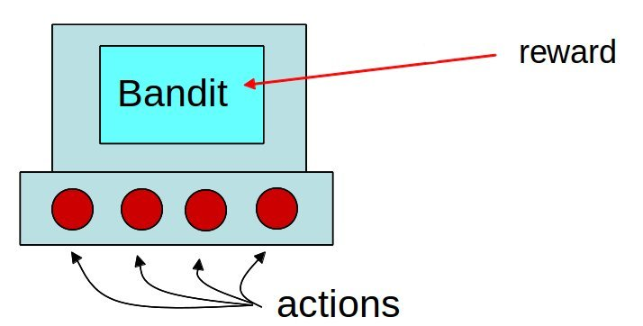
Greedy action selection
Greedy action selection allows to get rid quite early of the actions with negative rewards.
However, it may stick with the first positive action it founds, probably not the optimal one.
The more actions you have, the more likely you will get stuck in a suboptimal policy.

\(\epsilon\)-greedy action selection
\(\epsilon\)-greedy action selection continues to explore after finding a good (but often suboptimal) action.
It is not always able to recognize the optimal action (it depends on the variance of the rewards).

Softmax action selection
Softmax action selection explores more consistently the available actions.
The estimated Q-values are much closer to the true values than with (\(\epsilon\)-)greedy methods.

Greedy vs. \(\epsilon\)-greedy
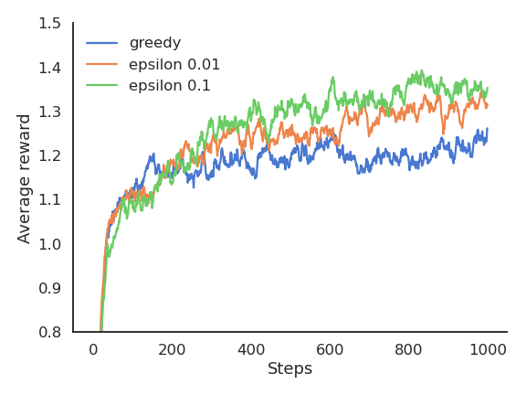
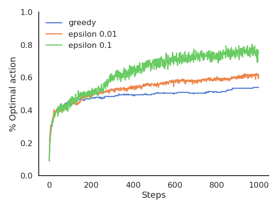
The greedy method learns faster at the beginning, but get stuck in the long-term by choosing suboptimal actions (50% of trials).
\(\epsilon\)-greedy methods perform better on the long term, because they continue to explore.
High values for \(\epsilon\) provide more exploration, hence find the optimal action earlier, but also tend to deselect it more often: with a limited number of plays, it may collect less reward than smaller values of \(\epsilon\).
Softmax vs. \(\epsilon\)-greedy
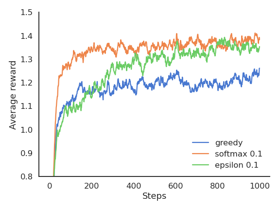
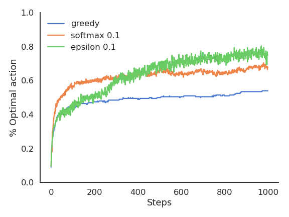
The softmax does not necessarily find a better solution than \(\epsilon\)-greedy, but it tends to find it faster (depending on \(\epsilon\) or \(\tau\)), as it does not lose time exploring obviously bad solutions.
\(\epsilon\)-greedy or softmax methods work best when the variance of rewards is high.
If the variance is zero (always the same reward value), the greedy method would find the optimal action more rapidly: the agent only needs to try each action once.
Exploration schedule
A useful technique to cope with the exploration-exploitation dilemma is to slowly decrease the value of \(\epsilon\) or \(\tau\) with the number of plays.
This allows for more exploration at the beginning of learning and more exploitation towards the end.
It is however hard to find the right decay rate for the exploration parameters.

Exploration schedule
The performance is worse at the beginning, as the agent explores with a high temperature.
But as the agent becomes greedier and greedier, the performance become more optimal than with a fixed temperature.
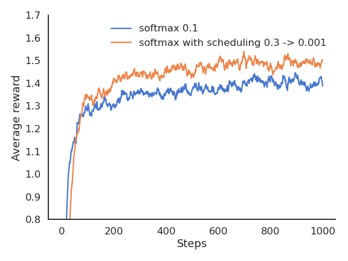
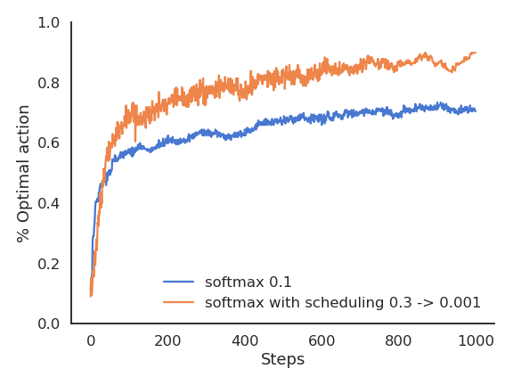
Summary of evaluative feedback methods
Other methods such as reinforcement comparison, gradient bandit and UCB exist, see [@Sutton2017] and the second exercise on bandits.
The methods all have their own advantages and disadvantages depending on the type of problem: stationary or not, high or low reward variance, etc…
These simple techniques are the most useful ones for bandit-like problems: more sophisticated ones exist, but they either make too restrictive assumptions, or are computationally intractable.
Take home messages:
RL tries to estimate values based on sampled rewards.
One has to balance exploitation and exploration throughout learning with the right action selection scheme.
Methods exploring more find better policies, but are initially slower.